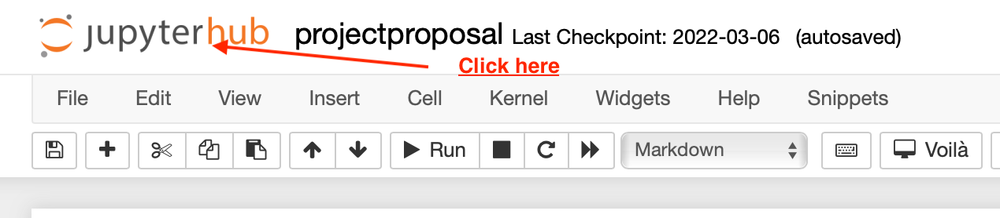
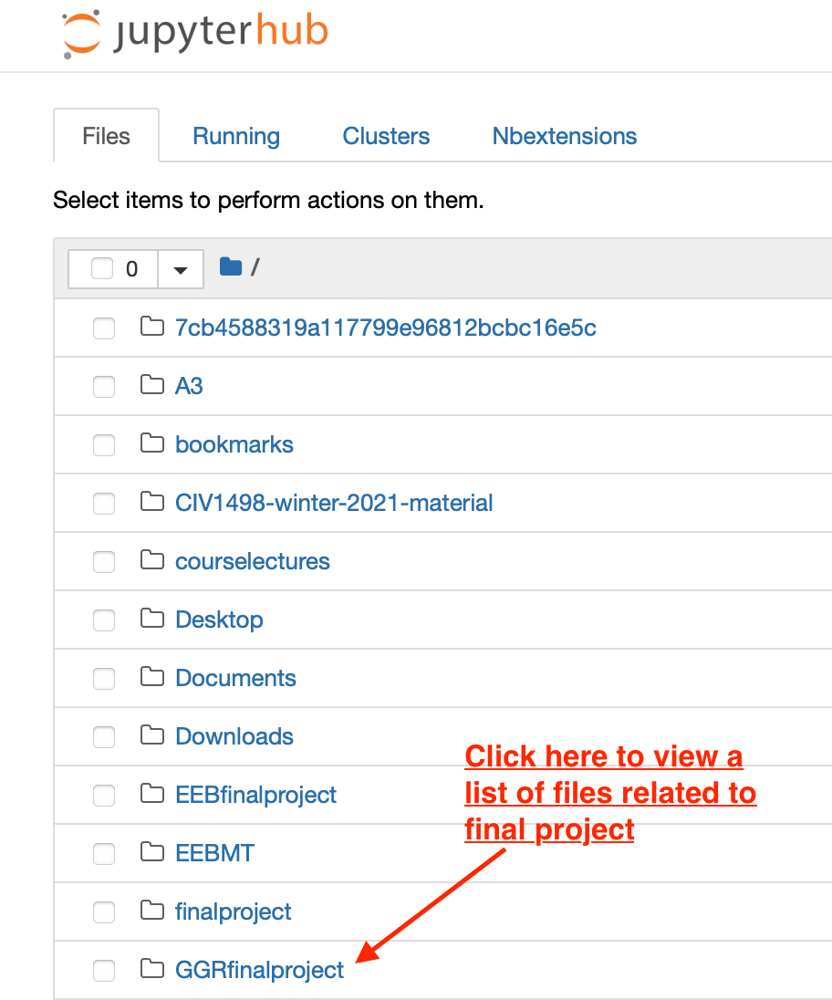

All the documents on this website can pulled into a live Jupyter session on the U of T Jupyterhub by following this link (U of T authentication required). This link will launch the project proposal notebook. To find all the documents related to the final project project follow these steps.
Step 1: Click on the Jupyterhub icon in the upper left-hand corner.

Step 2: Navigate to the folder named GGRfinalproject and click on the folder.

Step 3: You should see a list of the project files with the data.